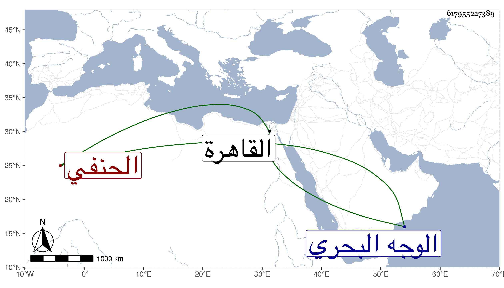

0902Sakhawi.DawLamic.ITO20230111-ara1.EIS1600.617955227389
Biography ID: 617955227389
339
عبد الرحمن بن محمد بن حسن بن علي أبو الفضل بن الشمس الحنفي الآتي أبوه . نشأ بالقاهرة في كنف والده فاشتغل وعقد الميعاد في زاويته في حياته ثم بعده ودار حوله بعض أتباع أبيه ومحبيه ولكنه لم يرتق لناموسه ووجاهته وأظنه ممن أخذ عن أبي العباس السرسي . مات في ذي الحجة سنة ثمان وستين بجزيرة أروى المعروفة الآن بالوسطي بعد مجيئه من الوجه البحري مريضا وحمل منها بكرة الغد فصلى عليه ودفن بزاوية أبيه وبجانبه خارج قنطرة طقزدمر من سويقة السباعين عن أزيد من ستين ظنا وسماه بعض المؤرخين محمدا وهو غلط .
